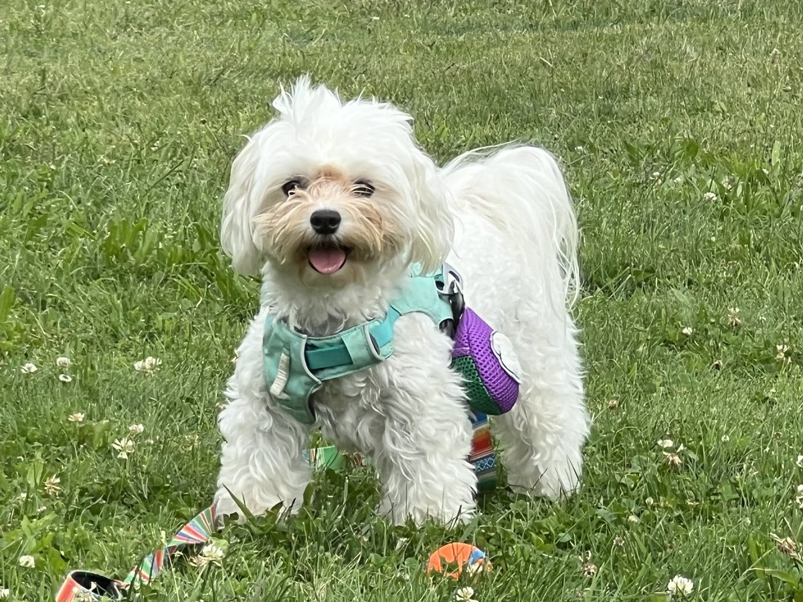
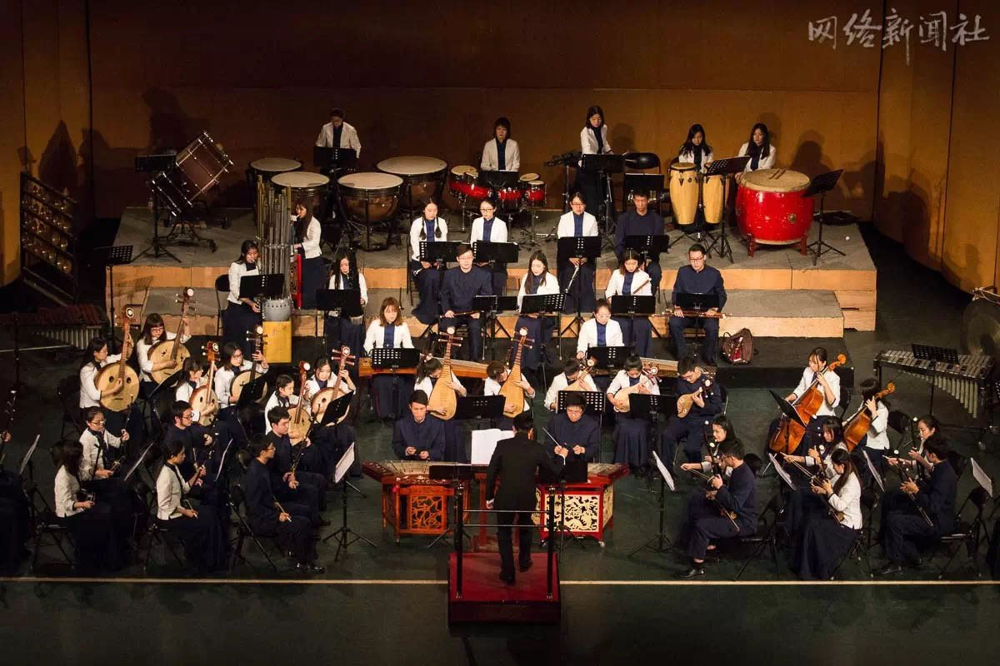
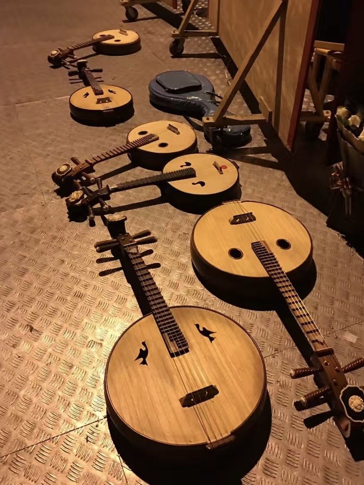

Nori

Nori is my little dog and one of the happiest cutie pies I know. She is always ready for a walk, a toy, or a nap on the sofa.
She has also been having a great time with Rawoo, the cat of my roommate Miaomiao Zhang, a fantastic PhD student and yoga instructor who will be on the strategy job market next year. Here are Nori and Rawoo together.


Films I Return To
I am drawn to films that help me understand the relationships between people, and between people and the world. Here are ten of those I have watched and rewatched in recent years.
-
Little Women
-
Portrait of a Lady on Fire Portrait de la jeune fille en feu
-
In the Mood for Love 花樣年華
-
Chungking Express 重慶森林
-
An Unfinished Film 一部未完成的电影
-
Our Little Sister 海街diary
-
Hamnet
-
Yi Yi 一一
-
Thelma & Louise
-
Resurrection 狂野时代
Ruan and the Orchestra
For four years at Renmin University of China, I played the ruan (阮), a Chinese plucked lute, in the university’s Chinese orchestra. I remember it as the organization where I experienced the highest level of cultural alignment with the lowest level of explicit incentives.

